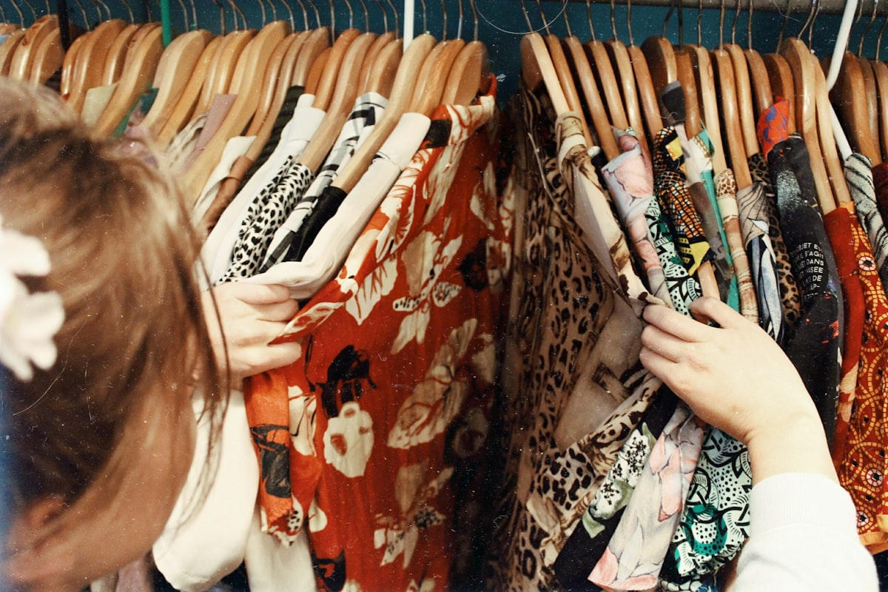

The bias cut remains one of the most intellectually formidable and visually mesmerizing achievements in the history of haute couture pattern construction. Popularized during the interwar Parisian golden age by the visionary couturière Madeleine Vionnet, cutting a woven textile on the bias — precisely at a 45-degree angle across the perpendicular warp and weft yarns — fundamentally transforms the physical behavior of the fabric. Where straight-grain woven silks hang with stiff, planar rigidity, bias-cut silk behaves as an amorphous, body-clinging liquid membrane that expands and contracts in direct harmony with the wearer's anatomy.
At our Mercer Street bespoke atelier, every bias-cut silk blouse is treated as a three-dimensional exercise in tension mechanics. Unlike mass-manufactured garments that rely on petroleum-derived elastane or synthetic spandex to achieve stretch, true bias garments achieve extraordinary mechanical extensibility purely through the geometric reorientation of woven silk filaments. In this treatise, we examine the mathematical mechanics of the trellis effect, analyze Poisson ratio deformations during arm articulation, and outline the critical gravity-hang protocols required to ensure hemline stability across years of wear.

1. The Trellis Effect: Geometric Shear Transformation
To understand why a bias-cut blouse clings so sensually without puckering, one must analyze the microscopic geometry of woven silk yarns. In a standard plain-weave or crepe-de-chine textile, longitudinal warp threads intersect transverse weft threads at strict 90-degree angles, forming an array of rigid squares. When tensile force is applied along either the warp or weft, the individual filament fibers bear the load along their longitudinal axes, which exhibit minimal elastic elongation (typically less than 2% to 4% for silk fibroin).
However, when a garment panel is rotated by exactly 45 degrees, the tensile stresses generated by the body no longer pull along the length of the yarns. Instead, they exert shear torque at the intersections of the weave. The square cells of the textile lattice deform into elongated rhombuses — a phenomenon known in textile physics as the trellis effect:
| Grain Alignment Angle | Primary Loading Mechanism | Elastic Strain Capacity (%) | Visual & Tactile Drape Manifestation |
|---|---|---|---|
| 0° (Straight Warp Grain) | Direct Longitudinal Fiber Tension | 2.5% - 3.8% | Rigid, vertical architectural hanging with crisp crease retention |
| 90° (Crosswise Weft Grain) | Transverse Fiber Elongation | 3.2% - 4.5% | Slight horizontal give; prone to sagging if unsupported |
| 45° (True Geometric Bias) | Lattice Shear Torque (Trellis Deformation) | 18.0% - 24.5% | Liquid body contouring, spiral clinging, dynamic motion response |
| 30° / 60° (Garment Off-Bias) | Asymmetric Mixed Stress Gradient | 7.5% - 11.0% | Uneven spiraling, lateral twisting, unstable hemline distortion |
2. Poisson Ratio Deformations & Anatomical Flattery
A crucial physical consequence of the trellis effect is the extreme transverse contraction that accompanies longitudinal elongation — governed by the material's Poisson's ratio. When a bias-cut silk blouse is pulled downward by the pull of gravity or the swing of the arms, the textile lengthens vertically while simultaneously narrowing horizontally.
This dynamic contraction is what causes a bias-cut blouse to sculpt organically around the waist, ribcage, and lower lumbar curve without requiring conventional vertical darts. In straight-grain tailoring, accommodating the transition from the bust to the narrow waist demands cutting darts or princess seams that interrupt the continuous visual flow of the silk print or sheen. On the true bias, the fabric contracts automatically at the narrowest anatomical circumference, providing custom-moulded poise that moves effortlessly as the wearer breathes, sits, and strides.
3. The 72-Hour Gravity Hang Protocol
The primary reason commercial mass-market fashion brands avoid bias cutting is manufacturing unpredictability. When a freshly cut bias panel is stitched immediately into a finished garment, gravity exerts continuous downward tension on the diagonal trellis lattice. Over the first several days of wear, the rhombic cells gradually slip and settle, causing the garment to lengthen unpredictably while the hemline distorts into ragged, uneven points.
At BlousePoiseJet, our master cutters enforce a mandatory 72-Hour Gravity Hang Protocol for every bias commission:
- Initial Rough Cutting: Pattern panels are rough-cut with generous two-inch perimeter margins along true 45-degree grainlines verified by optical thread counters.
- Suspension in Climate-Controlled Salon: The unstitched panels are suspended from weighted clips inside our Mercer Street salon for seventy-two consecutive hours at 21°C and 50% relative humidity. This allows natural gravitational pull and fiber relaxation to fully exhaust molecular lattice elongation.
- Precision True-Line Re-Trimming: Only after the fabric has reached complete gravitational equilibrium are the panels laid back onto the drafting bench, matched to the client's master pattern sloper, and trimmed to final seam dimensions.

4. Seam Elasticity & Micro-Zigzag Stitching
Assembling a bias-cut garment requires specialized stitch engineering. If a tailor sews a bias seam using a standard straight lockstitch with cotton thread, the rigid thread will snap the moment the client puts on the blouse and the bias fabric expands.
Our atelier utilizes a balanced combination of 100% fine filament silk sewing thread (No. 100 or 120 weight) and a microscopic stitch elongation technique. Seams are joined with a subtle micro-zigzag (0.5mm width, 1.5mm length) or a hand-stretched straight stitch sewn while the tailor applies slight tension to the seamline. When released, the stitch embeds invisibly into the seam allowance, capable of stretching in tandem with the silk lattice without puckering or thread rupture.
Frequently Asked Technical Questions
Because pattern pieces must be laid at a strict 45-degree angle across the fabric width rather than parallel to the selvedge, pattern placement creates substantial triangular off-cuts. A bias blouse typically consumes 2.5 to 3.2 meters of silk compared to 1.4 meters for straight-grain construction.
Yes, though alterations must be executed with extreme care by experienced bias tailors. Because adjustments to width affect length due to Poisson contraction, side seams must be pinned while the garment is draped directly on the body rather than laid flat on a table.
Bias-cut silk blouses should never be hung on narrow wire hangers for prolonged storage, as shoulder points will stretch and droop. We recommend folding the blouse gently with acid-free tissue paper and storing it flat inside a breathable linen garment box.